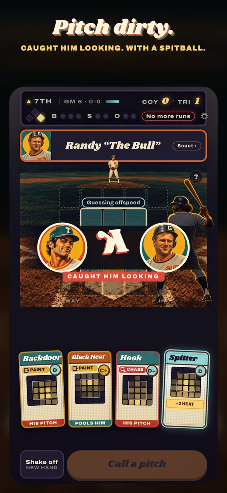
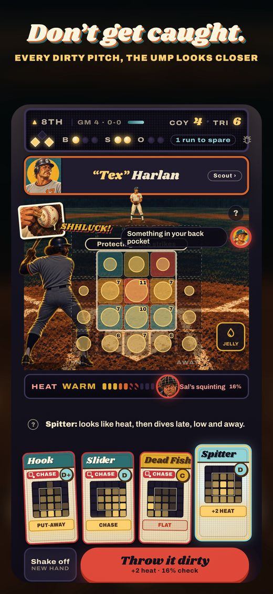
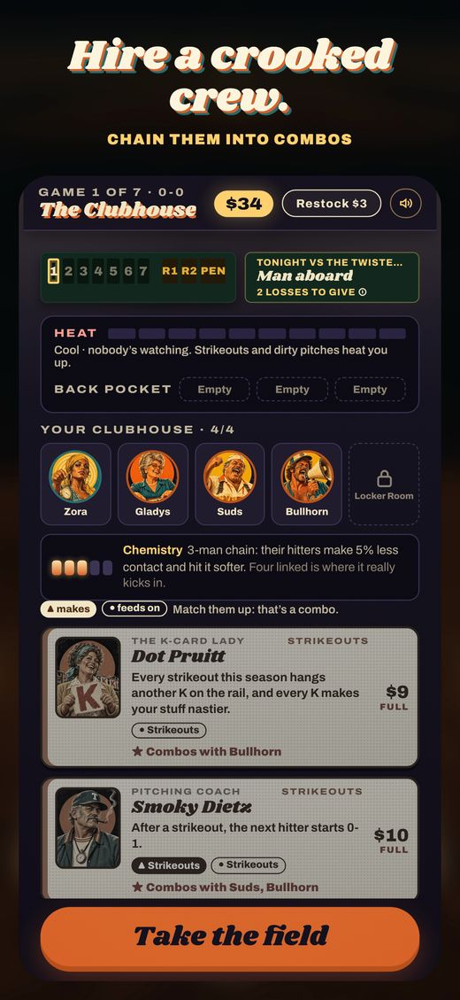
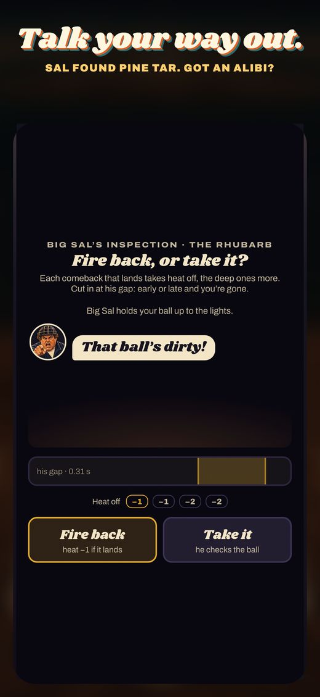
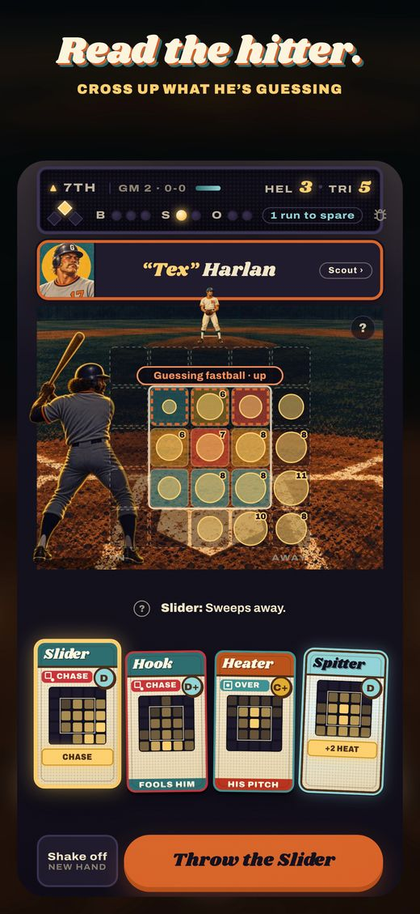
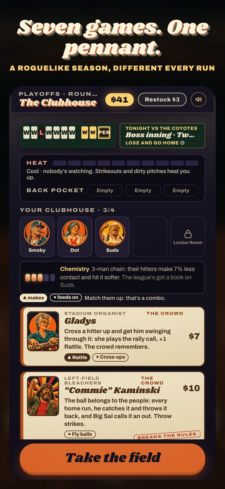
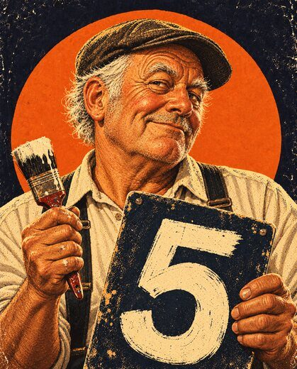
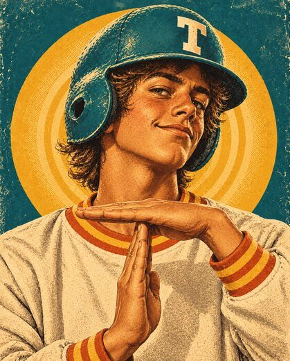
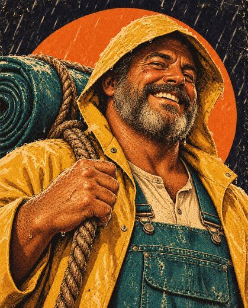
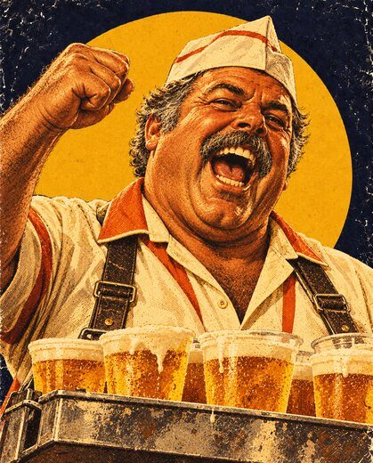

You're the pitcher. And you cheat. It's 1977: call every pitch from a hand of cards, load the ball when it counts, hire a crooked crew, and win the pennant before the umpire catches on.
You're the pitching staff of the Tri-City Grifters, a crooked ballclub in a fictional 1977 league. Every game is a single inning with the game on the line — a runner or two aboard, a lead you can't give back — and your job is three outs before they score. Seven games make a season. Lose two and you're done. Survive and it's three rounds of playoffs for the pennant.
Your pitches are cards. Each one has its own landing pattern on the zone — the Heater lives up, the Hook drops in low, a shaky card bleeds toward the middle where hangers live — and you hold four at a time. Every hitter shows you what he's sitting on, a speed and a spot, and the whole game is crossing him up.
Then you cheat. The spitter, the scuffed ball, pine tar, an envelope for the ump. Every dirty pitch builds heat, and the hotter you run, the closer Big Sal looks. When he wants the ball, you palm it, ditch it, or get in his face with an alibi. Get away with it and the organist plays Three Blind Mice.
Between games is the clubhouse: the beer vendor, the organist, the batboy, the groundskeeper — a crew you hire, each of whom bends one rule of baseball. Every run deals new hitters, new crew and new pitches, so no two seasons play the same.






Four cards, one hitter, one guess. Throw the other speed, somewhere he's cold, and watch him freeze. Throw into his guess and he's on it. After every pitch, one plain sentence says why it went the way it did.
Heat is a push-your-luck meter. A little makes your stuff nastier; a lot and Sal squeezes the zone and starts checking clean balls too. Getting caught doesn't end your night — it puts the hitter on first and Sal on you.
Every season pays out wax packs of 1977 Spitball cards. Complete a set and that crew member, pitch or locker is yours for good. A stick of bubble gum is a wild card. Of course it is.
That's the whole premise, really. The game's history is full of pitchers with Vaseline under the cap brim, emery boards in the glove and a straight face for the umpire, and the late seventies are its folk-hero years — the era of polyester, AM radio at the ballpark and the stadium organist calling the crowd. So Spitball lives there, in 1977, in painted trading-card art: sunset orange, faded teal, cream flannel, every character on a card you'd have found in a wax pack with a slab of pink gum.
The design comes from two card games I've lost too many hours to. Slay the Spire shows you what each enemy is about to do, and that turns a fight into a puzzle. So every hitter here shows you what he's guessing, and the at-bat stops being dice and starts being a read. Balatro takes poker and lets you bend its rules in ways they were never meant to bend. So the clubhouse doesn't sell +5% better framing — it sells people who break baseball.
And it had to sound like a ballpark. Every bat crack, mitt pop and crowd swell is synthesized live, the organ stings are a cheap seventies synth on purpose, and the music is a disco-funk groove that ducks under each pitch and gets tense with runners on.

Walks take five balls. He only painted four ball lights… and a fifth.
When you're ahead in the count, Big Sal's strike zone grows on every side.

Once a game, the first ball hit 106 mph or harder never happened. Rudy had called time.

Once a game, at three balls: rain delay. Back to 0-0, he forgets everything, and you get a new hand.

Every strikeout gets the bleachers going. The crowd rattles the hitters — and it remembers from game to game.
Cross a hitter up and get him swinging through it, and she plays the rally call. Suds and Gladys together are trouble.
Early on, six hidden rolls decided every pitch and nothing on screen said why. You'd throw a good pitch, he'd hit it, and the game shrugged. The fix wasn't better math, it was showing the hitter's guess. Once you can see he's sitting on heat up and in, throwing a changeup low and away is a decision, and when it works you know why. A player who simply crosses up the shown guess and stays out of his hot spots gets through the season about three times in four. Throwing cards at random gets you there about half the time. That gap is the game.
The shop had the same problem. It used to sell stat gear — rosin, glove oil, long toss — and when I measured it, owning every item from game one moved a good player's win rate by under three points. A 7% framing bump never shows itself, so it never changes a decision. So the gear went, and the crew came in: people whose card lights up on screen the moment they bend the rule. You can see Rudy take back the home run.
Then the part I care most about in a roguelike: a bad build should lose, and a good build should be a combo, not a stack of stars. Crew carry keywords — what they make, what they feed on — and a chain of people who feed each other builds chemistry that grows faster than the chain. Four unrelated stars win the pennant less than one run in five. A real four-chain wins it two or three times as often. And the cheap crew that carry your first few games fade as the league gets a book on them, so most good runs have a moment where you sell a favorite to make room.
Cheating got the same treatment. Heat used to be a token number that only rose when you cheated. Now it's push-your-luck: the hotter you are, the nastier your dirty stuff gets, and the tighter Sal squeezes. Cheating in big spots more than doubles your pennant odds. Cheating every chance you get almost never wins one. That's the morality of the game, and I didn't have to write it anywhere.
The tuning target is simple to say: your first run probably doesn't win the pennant, somewhere around your third to seventh it should, and a great player should be winning most of them. Three simulated players — a novice, a solid reader and an expert — play thousands of seasons through the real game, and every change has to keep each of them in their band. A few cuts came out of playtesting rather than the numbers: a reflex swipe to steer the ball in flight felt wrong in a game about calling pitches, so it's gone — nothing in Spitball needs twitch reflexes. And a season was running forty-plus minutes, so it lost two games.
One purchase. No ads, no in-app purchases, no account. iPhone, iPad and Mac.
Plays offline, syncs your locker room through your own iCloud, and keeps Game Center achievements and leaderboards for your longest run.